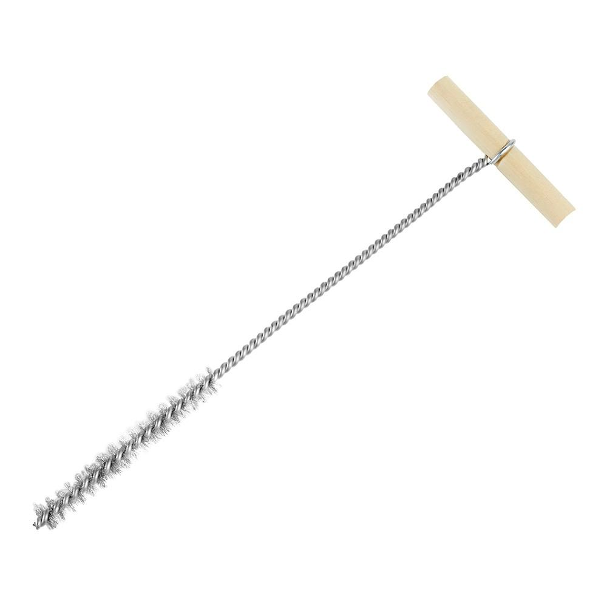

ДАМИР
ГРУПП
Главная
Каталог
Испытания
Контакты
Каталог
/
Принадлежности для химических анкеров
/
Ёршик для очистки отверстия Ø20 металлический

Ёршик для очистки отверстия Ø20 металлический
Раздел
Принадлежности для химических анкеров
Артикул (SKU)
TXR-6027825c2f9f8c
Цена
1 405,30 ₽
Запросить предложение
Для заказа и уточнения актуальной цены/наличия отправьте запрос на почту или позвоните +7 (495) 363-71-60.
Описание
Ёршик для очистки отверстия Ø20 металлический ХАРАКТЕРИСТИКИ: Артикул: R-BRUSH-M20/M Базовая единица: шт Вид аксессуара: Ершик
Другие товары раздела